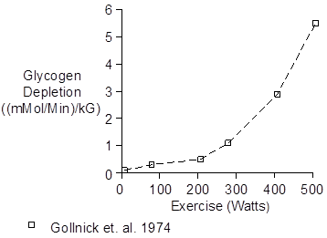
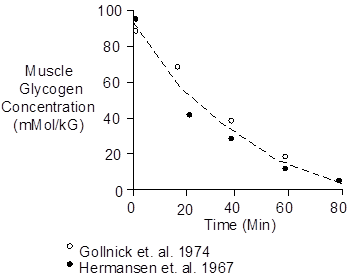

Exercise > Glycogen
Glycogen stores energy in skeletal muscle and liver.
Liver glycogen is used to maintain blood glucose concentration between meals, insuring an adequate supply of glucose for the brain.
Skeletal muscle glycogen is used as an energy source during exercise. The rate of muscle use, often called depletion, depends on whether or not the muscle metabolism is anaerobic. This, in turn, depends on the intensity of the exercise, as shown below.

With strenuous exercise, muscle glycogen concentration decreases over time to nearly zero and the exercise must stop, as shown below.

The data shown above was collected at intensities of 77% of maximum O2 uptake, 200 Watts (Hermansen et. al. 1967) and 83% of maximum O2 uptake, 286 Watts (Gollnick et. al. 1974).
 O2 Uptake (% Maximum)
O2 Uptake (% Maximum)
< 30 - Glycogen stores are preserved. Fuel comes from plasma free fatty acids (Romijn et. al. 1993).
80 - Just right. Large amounts of glycogen are burned and long-duration exercise is possible.
> 80 - Large amounts of glycogen are burned, but lactic acidosis keeps exercise duration short.
Chemistry
Glucose has a molecular weight of 180. Its composition is C6H12O6.
Glucose gives up an H2O when it is strung together in glycogen. Each glucosal unit (glucopyranose residue) has a molecular weight of 162 and a composition of C6H10O5. Units Muscle glycogen concentration is presented as G Glycogen/100 G Muscle and mMol Glucose/kG Muscle. To convert G/100 G to mMol/kG, multiply by 62. Rested muscle glycogen concentration depends on diet, training and previous athletic activity. With this disclaimer, typical rested values are 1.4 G/100G (Hultman 1967) and 80 mMol/kG (Gollnick et. al. 1974). References Gollnick, P.D., K.Piehl and B. Saltin. Selective glycogen depletion pattern in human muscle fibers after exercise of varying intensity and at varying pedaling rates. J. Physiol. 241:45-57, 1974. Hermansen, L., E. Hultman and B. Saltin. Muscle glycogen during prolonged severe exercise. Acta Physiol. Scand. 71:129-139, 1967. Hultman, E. Physiological role of muscle glycogen in man, with special reference to exercise. Cir. Res. 20(Suppl. 1):99-112, 1976. Romijn, J.A., E.F. Coyle, L.S. Sidossis, A. Gastaldelli, J.F. Horowitz, E. Endert and R.R. Wolfe. Regulation of endogenous fat and carbohydrate metabolism in relation to exercise intensity and duration. Amer. J. Physiol. 265:E380-E391, 1993.